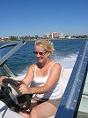
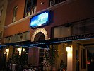

|
|
|
lornaland.co.uk Holidays Photo Gallery Lornaland Natter USA 2005 Journal Menu...New YorkBoston Cooperstown Buffalo Las Vegas Death Valley Yosemite National Park San Francisco San Simeon Los Angeles San Diego Southern California Pictures |
San Diego27th - 30th September 2005Tuesday 27th September 2005Another early start, another theme park. Today we were heading south again to San Diego, our final destination. First stop was Seaworld. After the success of yesterday's breakfast, Dan wanted to go to Denny's again. Luckily, there was a Denny's on our street but we never got there. The traffic was heavy and we couldn't get across it. We headed off in the other direction only to get lost in a one-way system and eventually gave up and headed to the freeway. We thought we'd be able to find one on the freeway but couldn't seem to find one. In the end we gave up looking and just decided to head off to the next service area and find some food. As we pulled off the freeway, there it was. Breakfast was the same as yesterday's and just as good. The drive to San Diego wasn't too bad and we arrived at Seaworld around 11.00am. It was a red hot day which was just as well as we managed to get we a lot throughout the day. We saw Shamu and his friends who were very cool as well as Clive and Seymour. I got to feed and stroke some dolphins but we missed the seal and Sea lion feeding. One sea lion had obviously worked out that the best way to get fed was to be cute so had mastered a pose on a rock. Too bad there was no fish for his efforts. At chucking out time we headed off in search of our hotel, the Best Western Bayside Inn. Considering we had no map of San Diego we managed to find the hotel without any problems. After a second early start and fun-packed day we were feeling extremely tired. We were tempted to order room service but managed to drag ourselves off to the hotel bar. Wednesday 28th September 2005Our first full day in San Diego and we treated ourselves to a nice lie-in and lazy morning. We headed down to the bay for a look about and stumbled across the Elephant & Castle pub which we visited for lunch. Afterwards, we headed along the bay in search of the boat hire company. We'd decided to hire a speedboat for an hour which although was rather expensive was very cool indeed. It was scary at first, especially when Dan was driving but when I got behind the wheel it was great fun. We came across a sleeping sea lion on our travels too.  The hour went quite fast and it was soon time to return our boat. Back on dry land we headed back along the bay stopping to look at the shops in Seaport Village where I had another beer and Dan had a fruit smoothie. After mooching about the shops we took a slow walk back to the hotel where we had a dip in the pool before dinner. After a very relaxing, chilled out day, we were ready to go off exploring for dinner. We headed over to the gaslight area and found a nice little Spanish restaurant. Thursday 29th September 2005It's our very last day! Four weeks have gone over in a flash! To celebrate our last day in America, we headed down to Mexico for the day. We hopped on the trolley car down to the end of the line where it was just a short walk over to Mexico. Getting into Mexico was the weirdest experience. You follow signs for a car park, cross over a bridge and you're in. No-one looks at your passport, we only saw one customs official and he was reading his paper. Once in Mexico though, everything's different. There was a huge crowd of taxi drivers waiting around offering to take you to the centre of Tijuana. On advise of the guidebook, we'd decided to make the short walk instead and save our money. The walk was quite easy and we got to get 2 margarita's for the price of 1. They were huge too!
 Eventually we were out of money and so we headed home To celebrate our last night we set off back to the gaslamp quarter for somewhere nice to eat. We found a very nice looking Chinese restaurant called the Blue Ginger and weren't disappointed. After dinner, we headed home to bed. Friday 30th September 2005Time to leave the USA. We were booked on the 3.35pm BA flight from LA so set off early for the drive up to the airport. We needed to stop at a beach en-route so Dan could finish his mission, plodging in both the Atlantic and the Pacific. We found a beach and spent half an hour walking along. Dan got a bit wetter than he'd planned so we had to dig about for a dry pair of shorts and a place for him to change. We arrived at LAX just before 1.00pm and were met with a huge queue. The airport system at LAX is very strange and involves you checking in and having your bag weighed, they then give it back to you for you to go and queue for it to be put through security and wait until it's given the all clear. We'd planned to be at the airport 3 hours before departure to enable us to have lunch before we left but all we managed to do in the 2 and half hours we had was queue. By the time we were finished, we had enough time to get through sectary and to the gate in time for boarding! On board, I was sat to a very strange American girl who looked like it was her first time on a plane. Luckily she went to sleep pretty quickly unlike me who spent most of the flight awake. We landed back into Heathrow around 10.00am on Saturday 1st October, our American Adventure was over. |
 We spent the next few hours strolling along in the baking hot sun being hassled to go into shop after
shop. We obliged to most and haggled for various things including some tequila with a worm inside. We
only encountered one real tourist rip-off where having stopped for some more margarita's, the bar owner
poured tequila into our mouths before we knew what was happening and then demanded we pay for them!
We spent the next few hours strolling along in the baking hot sun being hassled to go into shop after
shop. We obliged to most and haggled for various things including some tequila with a worm inside. We
only encountered one real tourist rip-off where having stopped for some more margarita's, the bar owner
poured tequila into our mouths before we knew what was happening and then demanded we pay for them!